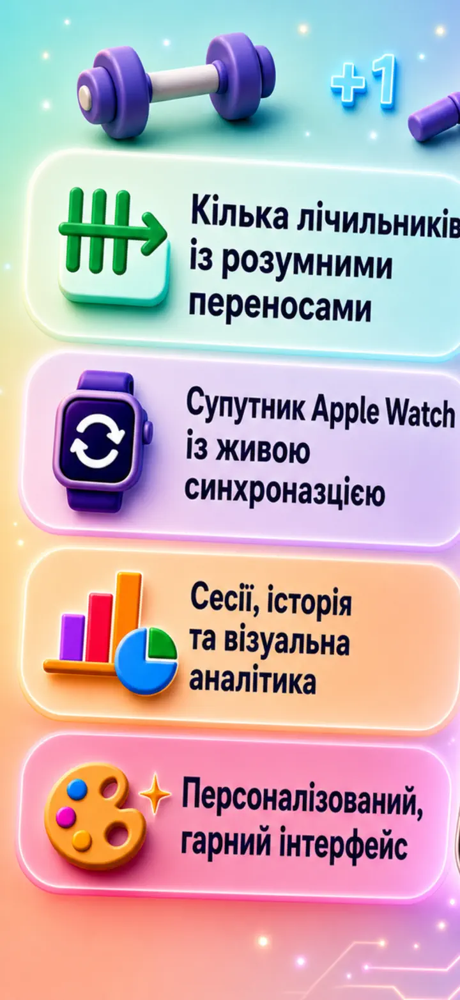
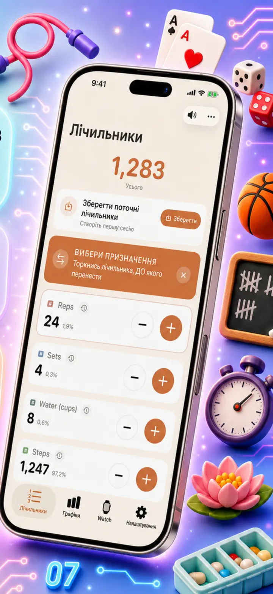
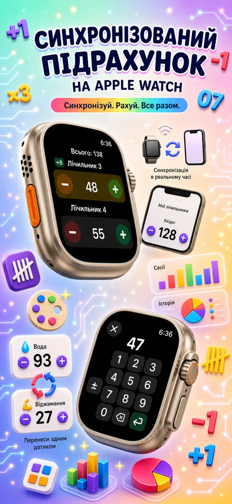
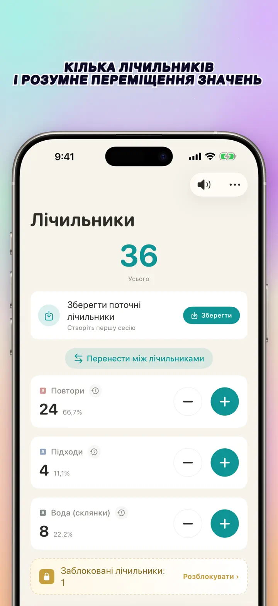
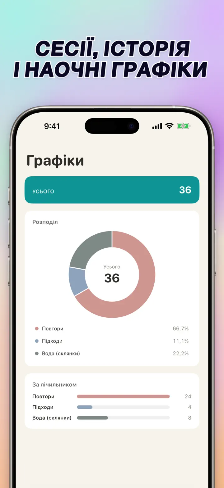
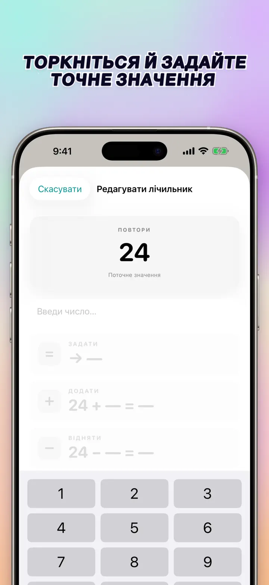
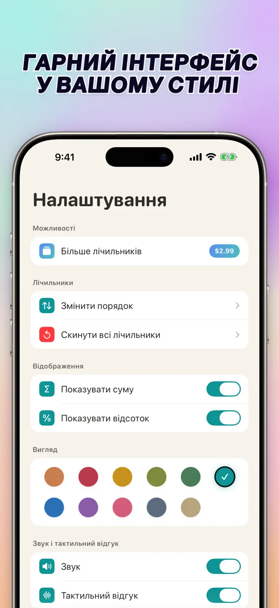
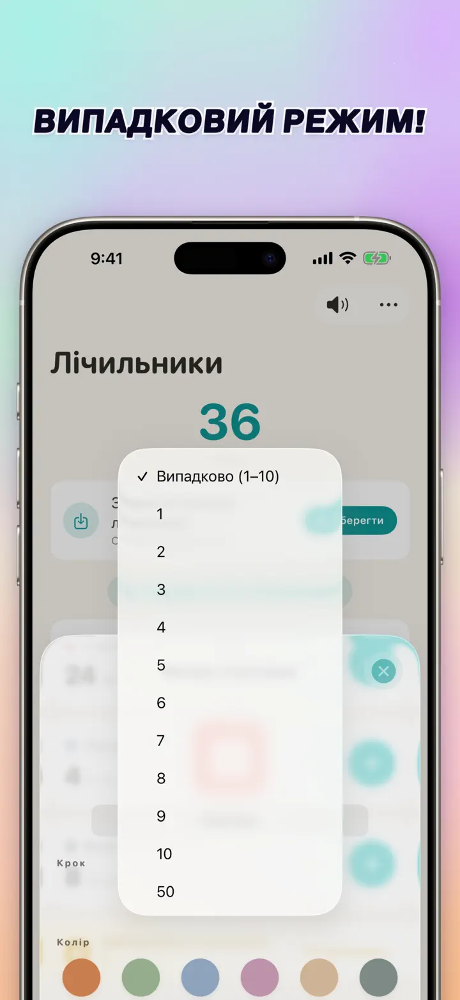

Лічильник 123
Watch-синхр., кліки, бали
Нове: віджети на головному екрані — торкайся +/- на віджеті, не відкриваючи програму. Лічильник і клікер, синхронізація Apple Watch, випадковий режим, графіки, історія.
Завантажити з App Store
Про застосунок
Лічильник 123 — швидкий і гнучкий лічильник для iPhone, iPad та Apple Watch. Давай назви лічильникам, обирай колір і рахуй що завгодно — повтори в залі, ряди в'язання, вервицю, бали на уроці, інвентар, очки у грі. Усі дані залишаються локально на пристрої, працює офлайн.
НАЛАШТОВУВАНІ ЛІЧИЛЬНИКИ
- Створюй окремі лічильники для активностей, ігор, рутин або списків
- Індивідуальна назва й колір для кожного
- Перетягуй, щоб міняти порядок
- Утримуй, щоб рахувати швидко
- Повністю офлайн — без реєстрації, без хмари
ПРЯМИЙ ВВІД ТА МАСОВІ ДІЇ
- Торкнись лічильника, щоб одразу задати початкове значення — не треба скидати на нуль
- Масове +/-: змінюй лічильник на будь-яке число одним дотиком
- Перенесення: переноси значення з одного лічильника на інший без подвійної дії
- Власний крок: один дотик додає 1, 5, 10, 100 або будь-яке число
- Живий попередній перегляд кожної зміни
ВИПАДКОВИЙ РЕЖИМ
- Лічильник може обирати нове значення від 1 до 10 при кожному дотику
- Додавай або віднімай випадкові значення кнопками + і -
- Корисно для вправ, ігор, винагород, занять і тренувальних рутин
- Кожен випадковий дотик зберігається в історії лічильника
ПІДСУМКИ ТА ГРАФІКИ
- Загальна сума всіх лічильників з першого погляду
- Режим відсотків: внесок кожного лічильника в загальне
- Інтерактивна стовпчаста діаграма — перемикай між значенням (#) і відсотками (%)
- Сортування за значенням для миттєвого рейтингу
ІСТОРІЯ ТА ПОДІЛ
- Повна історія змін: кожне додавання, віднімання і редагування
- Зберігай набори лічильників і завантажуй їх миттєво
- Ділись конфігураціями з командою, учнями або друзями
- Переглядай історію як журнал за датами, згруповані сесії або статистику день/тиждень/місяць
ЖИВА СИНХРОНІЗАЦІЯ З APPLE WATCH
- Зміни лічильник на iPhone або Apple Watch — обидва пристрої залишаться синхронізованими
- Повноцінний нативний watchOS застосунок — не просто компаньйон
- Назви, кольори та значення синхронізовані на зап'ясті
- Торкнись — порахуй, утримуй — повтори, прямо з годинника
- Працює самостійно, коли iPhone далеко
ДЛЯ iPhone, iPad ТА APPLE WATCH
- Адаптивні макети під будь-який розмір екрана
- iPad показує більше лічильників одночасно, підтримується Split View
- Приватність на першому місці: локальне зберігання, без хмари, без акаунта
ПІДХОДИТЬ ДЛЯ
- Повтори та підходи в залі
- Ряди в'язання і петлі гачком
- Вервиця, тасбіх, молитовні намистини
- Бали на уроці та перекличка
- Баскетбол, волейбол, гандбол — швидкий рахунок
- Настільний теніс
- Інвентар і підрахунок складу
- Настільні ігри, карти, преферанс, дурак
- Басейн і бігові кола
- Спостереження за птахами
- Підрахунок відвідувачів на подіях
- Трекінг звичок і цілей
Завантаж Лічильник 123 і зроби кожен підрахунок простим — ясно, швидко, приватно.
Політика конфіденційності: https://masawata.net/privacy-policy.html Умови використання: https://www.apple.com/legal/internet-services/itunes/dev/stdeula/
Знімки екрана







Лічильник 123
Нове: віджети на головному екрані — торкайся +/- на віджеті, не відкриваючи програму. Лічильник і клікер, синхронізація Apple Watch, випадковий режим, графіки, історія.
Завантажити з App Store